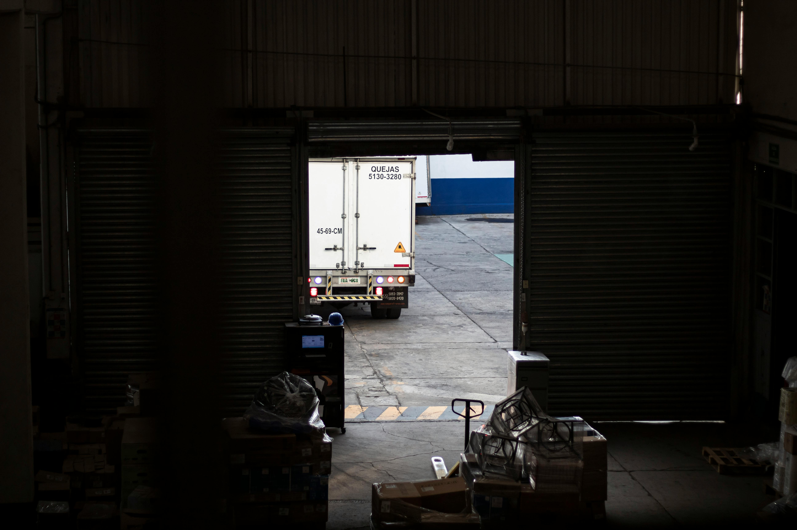

Дилеры и компания
Личный кабинет компании до 10 пользователей и кабинет дилеров до 100+ пользователей.
От заявки дилера до счета, оплаты и отгрузки — в одном рабочем контуре. Без ручных разрывов между менеджерами, складами, 1С и логистикой.
Личный кабинет компании до 10 пользователей и кабинет дилеров до 100+ пользователей.
Остатки по двум складам, резервирование и учет планируемого производства.
Счета, оплаты из 1С, дропшиппинг, календарь отгрузок и реестр заказов.
Реестр заказов, расчет в упаковках и м², остатки, производство, счета, логистика и аналитика в одном интерфейсе.
В вашей модели бизнеса заказ проходит через несколько связанных зон: дилер, менеджер, расчет в нужных единицах, остатки по складам, планируемое производство, счет, оплата и отгрузка. Если хотя бы один этап выпадает из общей логики, бизнес начинает терять скорость и управляемость.
Дилеры, прямые заказы, отгрузки, складской контур и логистика.
До 10 пользователей: менеджеры, счета, статусы, логистика и контроль исполнения.
До 100 пользователей с возможностью роста без потери логики процессов.
Упаковки как единица заказа и автоматический расчет цены за м².
Остатки по 2 складам плюс учет планируемого производства.
Интеграция по счетам и оплатам без двойного ручного ввода.
Календарь отгрузок, дропшиппинг, реестр заказов и отчетность.
Когда цена считается отдельно, остатки проверяются вручную, статус заказа собирается из переписки, а отгрузки ведутся вне общего календаря, менеджеры тратят время на сверки вместо продаж, склад и логистика работают с задержкой, а дилер не получает прозрачного сервиса.
Менеджеры и склад тратят ресурс на сверки, уточнения и ручную сборку статуса заказа.
Единицы заказа, цена за м², остатки и срок отгрузки расходятся между участниками процесса.
Заказ проходит через разные таблицы, чаты и файлы вместо одной управляемой системы.
Нет общей точки, где видно дату, готовность, оплату и исполнение по каждому заказу.
Ваша задача — не просто “автоматизировать кабинет”, а сократить операционный шум в ядре бизнеса: заказ, склад, счет, оплата и отгрузка.
Заказ собирается из разных действий: расчет, остатки, счет, оплата, логистика.
Один маршрут заказа: единый расчет, остатки, оплата, отгрузка и контроль исполнения.
Один заказ проходит через один маршрут: расчет → остатки → резерв / производство → счет → оплата → отгрузка → отчетность.
Дилер или менеджер оформляет заказ в системе
Упаковки, цена за м², проверка состава заказа
Остатки, реестр, статусы, маршрутизация задачи
Выставление счета и контроль оплаты
Календарь, логистика, дропшиппинг и дата отгрузки
Не “кусочные модули”, а связанный контур ролей, статусов и данных.
Единое рабочее пространство для менеджеров и внутренних пользователей: заказы, счета, статусы, логистика и контроль исполнения.
Понятный цифровой канал, где дилер сам оформляет заказ, видит статус и не тратит время на ручные уточнения.
Работа с упаковками как единицей заказа и автоматический расчет цены за м² без ручного пересчета.
Остатки по двум складам, резервирование и учет планируемого производства в единой логике заказа.
Формирование счетов и интеграция с 1С по счетам и оплатам без двойного ручного ввода.
Календарь отгрузок, дропшиппинг, реестр заказов, продажи и управленческая прозрачность.
Система проверяет остатки по двум складам, учитывает резервирование и планируемое производство, чтобы команда принимала решение по заказу на основе факта, а не на основе ручных догадок.
Календарь отгрузок, дропшиппинг, логистический статус и контроль даты становятся частью заказа, а не отдельным ручным процессом.

Отдельный сценарий отгрузки со своей логикой исполнения внутри единого заказа.
Статус заказа связан с датой, логистикой и фактом готовности, а не живет отдельно от них.
В системе видно, что происходит с каждым заказом: кто создал, что заказано, какой склад задействован, выставлен ли счет, есть ли оплата и когда назначена отгрузка.
Заказы, оплаты, отгрузки и динамика продаж — в одном интерфейсе без ручных сводок.
Ваш запрос уже хорошо определен: кабинет компании, кабинет дилеров, расчет, склады, производство, 1С, логистика, реестр заказов и отчеты. Здесь важнее быстро запустить рабочую систему под понятные процессы, чем заходить в тяжелый ERP-сценарий на старте.
Согласуем финальный состав ролей и сценариев, фиксируем контур внедрения и переходим к запуску проекта. На выходе вы получаете рабочий инструмент, который объединяет дилеров, заказы, склады, счета и логистику в одной системе.
Второй вариант для компании, которой нужен более широкий ERP-контур и дополнительный запас на дальнейшее развитие процессов.
Это сценарий для компании, которая хочет строить более широкую архитектуру управления процессами и закладывать запас на дальнейшее развитие ERP-контура глубже текущего набора задач.
Этот вариант оправдан, если задача — не только быстро закрыть текущий прикладной контур, но и закладывать глубже платформу под будущее расширение ролей, процессов и модулей.
Подходит для сценария, где компания хочет двигаться к более широкому ERP-подходу.
Больше проектной глубины в описании ролей, статусов, модулей и будущих связок.
Лучше, когда уже на старте важен горизонт расширения процессов дальше текущей задачи.
Разница не в перечне задач, а в платформе, глубине настройки и масштабе будущего развития.
Личный кабинет компании
Кабинет дилеров
Калькулятор заказа в упаковках и м²
Склады, остатки и планируемое производство
Счета, оплаты и интеграция с 1С
Логистика, календарь отгрузок, дропшиппинг и реестр заказов
Это тот же прикладной контур бизнеса, но на более тяжелой платформе, где глубже проектируется логика модулей, ролей и дальнейшего расширения.
Этот путь оправдан, когда компании действительно нужен запас на более широкий ERP-контур. Но он требует большей глубины настройки, более детальной проработки ролей и более сложного пути к финальному рабочему состоянию.
Нужно глубже проектировать состав модулей, ролей и логики обмена данными.
Путь до финального рабочего контура обычно длиннее, чем у точечного внедрения.
Именно поэтому Odoo уместен там, где важен запас на дальнейшее усложнение бизнес-процессов.
Этот вариант стоит рассматривать, если вы хотите сразу строить более широкую ERP-архитектуру и готовы заходить в более глубокую проектную настройку под текущие и будущие процессы.
Фиксируем роли, состав модулей и сценарии интеграции, после чего переходим к проектированию и внедрению. Это путь для бизнеса, который выбирает более широкий ERP-подход и смотрит дальше текущего контура задач.